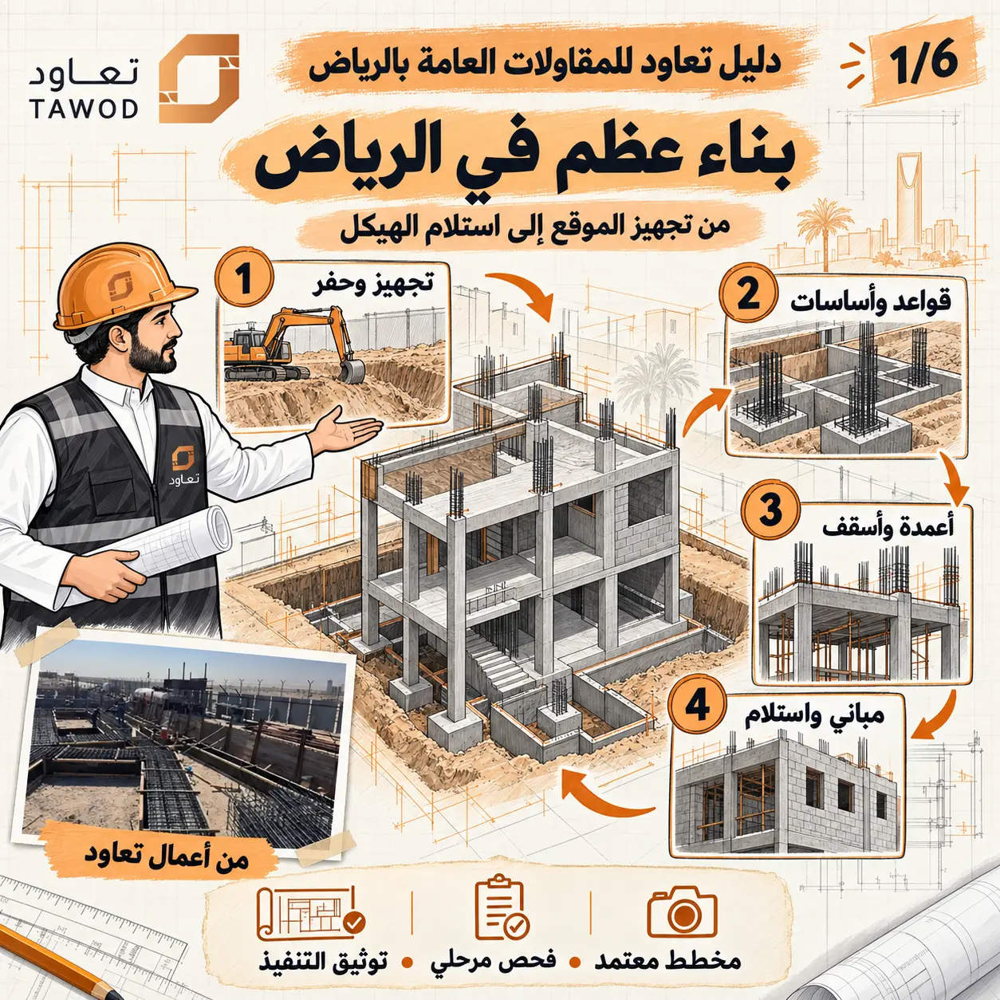

يبحث المالك عادة عن بناء عظم في الرياض بسؤال مباشر عن السعر أو المدة، لكن القرار المهني يبدأ قبل ذلك: ما المخططات التي سيُنفذ عليها؟ ما حدود التوريد؟ من يعتمد كل مرحلة؟ وما الدليل المطلوب قبل الصب أو الردم أو تغطية الأعمال؟ عندما تُحسم هذه الأسئلة مبكرًا يصبح العرض قابلًا للمقارنة، ويصبح تقدم الموقع قابلًا للقياس.
هذا الدليل لا يستبدل المخططات أو دور المصمم والمشرف، بل ينظم رحلة التنفيذ في أربع بوابات واضحة. كل بوابة تربط العمل بالمستند المرجعي والفحص المطلوب والوثيقة التي تثبت الإغلاق. وللتوسع في العقود راجع بنود عقد بناء العظم، وللفحوصات راجع قائمة جودة أعمال العظم.
لماذا نستخدم بوابات ضبط في بناء العظم؟
بوابة الضبط هي نقطة توقف متفق عليها لا ينتقل بعدها الفريق إلى العمل التالي قبل مراجعة البنود المرتبطة بها. الفكرة بسيطة: فحص التسليح قبل الصب أكثر فاعلية من اكتشاف الملاحظة بعد الخرسانة، وتصوير التمديدات المدفونة قبل الردم أكثر فائدة من البحث عنها لاحقًا.
مدخلات
مخطط معتمد، مواصفات، تعليمات فنية وحدود توريد واضحة.
تنفيذ
أعمال مرتبة حسب التسلسل والموارد والمسؤوليات المعتمدة.
فحص
مراجعة في التوقيت الذي ما زال فيه التصحيح ممكنًا دون هدم.
دليل إغلاق
صور ومحاضر ونتائج اختبارات وملاحظات مغلقة حسب المشروع.
قبل الحفر: ثبّت المدخلات وحدود المشروع
تبدأ مرحلة البناء بمراجعة الرخصة والمخططات المعمارية والإنشائية وتقرير التربة والمناسيب وحدود الأرض والخدمات القائمة وإمكانية دخول المعدات والتخزين. تعرض منصة بلدي مسار إصدار رخصة البناء ومتطلباته الحالية، بينما يجمع المركز السعودي لكود البناء المراجع الفنية الرسمية. يحدد المصمم والمشرف والجهات المختصة ما ينطبق فعليًا على المشروع.
في الرياض تؤثر حركة الشاحنات، مساحة التخزين، المباني المجاورة، حرارة الطقس وتوقيت الصب في خطة الموقع، لكن لا تُعالج هذه العوامل بجملة عامة داخل العرض. يجب تحويلها إلى قرارات: أين التخزين؟ كيف تُحمى المواد؟ ما مسار المضخة؟ ما الإجراء عند تغير الظروف؟ ومن يملك قرار إيقاف المرحلة؟
البوابة الأولى: الحفر والقواعد والأساسات
تشمل هذه البوابة التحقق من المحاور والمناسيب وحدود الحفر وحالة القاع وتجهيز طبقات التأسيس والقواعد والميدات وما يرتبط بالعزل أو التمديدات المدفونة حسب المخططات. لا توجد قائمة واحدة تناسب كل مبنى؛ فالنظام الإنشائي والتربة والتصميم يحددان ما يجب مراجعته.
قبل الردم أو تغطية أي جزء، تُجمع نتائج الفحوصات المطلوبة وصور العناصر المخفية، وتُراجع الفتحات والعبّارات ومسارات الصرف أو التأريض المرتبطة بالنطاق. يجب كذلك تحديد نوع الردم وطريقة الدمك وطبقات التنفيذ والاختبارات المطلوبة في مستندات المشروع، لا في تفاهم شفهي بالموقع.

البوابة الثانية: الأعمدة والأسقف
تتكرر دورة الأعمدة والأسقف، ولذلك يسهل أن يتحول الخطأ الصغير إلى نمط متكرر. تُراجع الأبعاد والمواقع والمناسيب والتسليح والغطاء والشدات والدعامات والفتحات والعناصر المدفونة وفق المخططات وتعليمات المختصين قبل كل صبة. كما تُنظم حركة العمال والمعدات ومسار الخرسانة وأخذ العينات والمعالجة حسب خطة المشروع.
الجودة هنا ليست صورة نهائية للسطح فقط. المطلوب سجل يوضح أي إصدار من المخططات استُخدم، ومن راجع، وما الملاحظات التي ظهرت، وكيف أُغلقت، وما نتائج الاختبارات المرتبطة. ويمكن الرجوع إلى دليل ضبط خرسانة بناء العظم لفهم العلاقة بين التوريد والصب والمعالجة والتوثيق.
البوابة الثالثة: المباني والتنسيق مع الخدمات
بعد اكتمال أجزاء الهيكل تبدأ أعمال المباني، لكن التنسيق مع الكهرباء والسباكة والتكييف يجب أن يسبق الإغلاق. تُراجع مواقع الأبواب والنوافذ، سماكات الجدران، الفتحات، المناسيب، العتب والربط حسب التفاصيل، ثم تُثبت مسارات الخدمات والنقاط التي تؤثر في الجدران والأسقف.
الهدف هو منع سلسلة من التعديلات: جدار يُبنى ثم يُفتح لمسار، فتحة تُنقل فتؤثر في الواجهة، أو نقطة صرف لا تتوافق مع منسوب التشطيب. لذلك يجتمع ممثلو التخصصات عند نقاط القرار، وتصدر ملاحظة واحدة معتمدة بدل تعليمات متعارضة من أكثر من جهة.
البوابة الرابعة: استلام الهيكل والوثائق
استلام العظم ليس جولة شكلية بعد مغادرة الطاقم. يُراجع ما تم تنفيذه مقابل النطاق والمخططات، وتُحصر الملاحظات بحسب المنطقة والعنصر والمسؤول والموعد. كما تُجمع نتائج الاختبارات والصور ومحاضر الصب واعتمادات المواد وأي مخططات معدلة متاحة وفق العقد.
تساعد هذه الحزمة فريق العزل والواجهات والكهرباء والسباكة والتشطيب على بدء عمله من معلومات صحيحة. راجع دليل استلام بناء العظم للحصول على قائمة أكثر تفصيلًا قبل إغلاق المرحلة.
كيف تقارن مقاول بناء عظم بالرياض؟
لا تبدأ المقارنة من الرقم الإجمالي. أرسل المدخلات نفسها لكل جهة، ثم افحص تعريف المساحة، البنود المشمولة، المواد، الاختبارات، الاستثناءات، البرنامج، الفريق، الدفعات وآلية التغيير. العرض الأقل قد يكون ناقص النطاق، والعرض الأعلى قد يضم عناصر لم تطلبها؛ لذلك تُسوّى الفروق أولًا.
- اطلب جدول نطاق يمكن وضع علامة أمام كل بند فيه.
- راجع مشروعًا مشابهًا من حيث النوع والتعقيد، لا الصور العامة فقط.
- اربط الدفعات بمخرجات قابلة للفحص بدل التاريخ وحده.
- حدد طريقة توثيق التغيير قبل ظهور أول تغيير.
الخلاصة وخطوة البدء
مشروع بناء عظم في الرياض يصبح أوضح عندما يُدار كأربع بوابات: مدخلات الموقع والأساسات، الهيكل الخرساني، المباني وتنسيق الخدمات، ثم الاستلام والوثائق. هذا التنظيم لا يلغي خبرة الفريق؛ بل يجعلها قابلة للمتابعة والمراجعة.
تريد مراجعة نطاق أعمال العظم؟
شارك شركة تعاود موقع المشروع والمخططات وتقرير التربة وجدول الكميات المتاح، وسنحدد البيانات الناقصة والخطوة المناسبة قبل التسعير أو التنفيذ.
أرسل تفاصيل مشروعكتابع أدلة بناء العظم
انتقل إلى الدليل المحوري أو الأدلة المرتبطة، ثم إلى الخدمة عندما تصبح جاهزًا للتنفيذ.